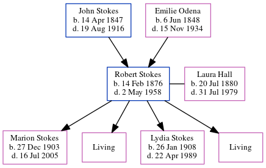

Robert Marion Stokes 1876 - 1958
[ Home ] | [ Calendar ] | [ Surnames Index ] | [ Family History ]The child of John Stokes (a virginia philips told me that he owned a big grocery store and later a vinegar works; his last business was stokes marble company) and Emilie OdenaRobert Stokes, the great-great-uncle of Michele Copp (née Phillips), was born in Atlanta, Fulton, Georgia, USA on Feb 14, 18761 and married Laura Hall (with whom he had 4 children: Marion Jeanette, Laura Louise, Lydia Goodwin and Carolyn, along with 2 surviving children) on Apr 17, 1901 (Fr. Basin). In 1930, he was living in Hyde Park, Hillsborough, Florida1.
He died on May 2, 1958 in Orlando, Brevard, Florida, USA2.
Parents
- John Wesley was born on Apr 14, 1847
- Emilie Mae was born on Jun 6, 1848
Children
- Marion Jeanette was born on Dec 27, 1903
- Lydia Goodwin was born on Jan 26, 1908
Citations
- 1930 United States Federal Census Online publication - Provo, UT, USA: MyFamily.com, Inc., 2002.Original data - United States of America, Bureau of the Census. Fifteenth Census of the United States, 1930. Washington, D.C.: National Archives and Records Administration, 1930. T626, 2,667 rol
- Florida Death Index, 1877-1998 Online publication - Provo, UT, USA: The Generations Network, Inc., 2004.Original data - State of Florida. Florida Death Index, 1877-1998. Florida: Florida Department of Health, Office of Vital Records, 1998.Original data: State of Florida. Florida Death I
Family Tree
Generated by ged2site. Last updated on Jun 16, 2024